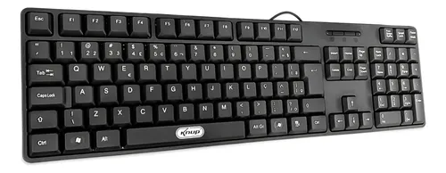

O que é CPU?

A CPU (Unidade Central de Processamento) é o componente principal de um computador responsável por executar as instruções dos programas. Ela realiza operações lógicas, aritméticas e controla o funcionamento dos outros componentes do sistema, como memória e dispositivos de entrada e saída. É muitas vezes chamada de “cérebro” do computador, pois interpreta e processa os dados que fazem tudo funcionar, desde abrir um programa até rodar um jogo ou acessar a internet.
1.1.2 ArmazenamentoO que é armazemento?
Armazenamento de dispositivos é o local onde os dados de um computador ou outro equipamento eletrônico são guardados. Ele permite salvar informações de forma temporária ou permanente, como documentos, fotos, vídeos, programas e o próprio sistema operacional. Existem dois tipos principais: o armazenamento interno (como HDs e SSDs dentro do computador) e o externo (como pendrives, cartões de memória e discos rígidos externos). Esses dispositivos mantêm os dados mesmo quando o equipamento é desligado.
1.1.3 MemóriaO que é uma Memória?
Memória de dispositivos é a capacidade que um aparelho eletrônico tem de armazenar informações, sejam elas temporárias ou permanentes. Pode se referir tanto à memória interna usada para guardar dados e aplicativos, quanto à memória temporária usada para o funcionamento do sistema, como a RAM. Também pode significar o registro que o sistema mantém dos dispositivos que já foram conectados, como fones Bluetooth ou impressoras, facilitando o reconhecimento e a conexão futura. O significado exato depende do contexto em que o termo é usado, mas, em geral, envolve o armazenamento ou lembrança de informações relacionadas ao funcionamento e ao uso do dispositivo.
1.1.4 Fonte de alimentaçãoO que é uma Fonte de alimentação?
A fonte de alimentação de um dispositivo é o componente responsável por fornecer a energia elétrica necessária para que ele funcione. Ela converte a energia da tomada (ou de outra fonte, como uma bateria) em uma forma adequada para o dispositivo, com a voltagem e corrente corretas. Por exemplo, em um computador, a fonte de alimentação pega a eletricidade da tomada e distribui para as partes internas, como a placa-mãe, o processador e o disco rígido. Em celulares, a fonte pode ser o carregador, que transforma a energia da tomada para carregar a bateria e alimentar o aparelho. Sem a fonte de alimentação, o dispositivo não liga nem funciona.
O que é um teclado?
Um teclado é um dispositivo usado para digitar letras, números e símbolos em aparelhos eletrônicos, como computadores, celulares e tablets. Ele serve para enviar comandos e escrever textos. Existem teclados físicos, com teclas reais que você aperta, e teclados virtuais, que aparecem na tela dos dispositivos com toque. Ao pressionar uma tecla, o teclado envia um sinal para o aparelho, que interpreta essa informação e a exibe na tela. É uma das principais formas de interagir com computadores e outros dispositivos digitais.
1.2.2 Monitor de vídeoO que é um Monitor de video?
Um monitor de vídeo é a tela usada para exibir as imagens geradas por um computador ou outro dispositivo eletrônico. Ele mostra tudo o que está acontecendo no sistema, como programas abertos, vídeos, textos, jogos e qualquer outro tipo de conteúdo visual. Funciona como uma "janela" para o usuário ver e interagir com o que está sendo processado pela máquina. Os monitores podem ter diferentes tamanhos, resoluções e tecnologias, como LCD, LED ou OLED, e podem se conectar por cabos como HDMI, VGA ou DisplayPort.
1.2.3 MouseO que é um Mouse?

Um mouse é um dispositivo de entrada usado para controlar o ponteiro (ou cursor) na tela do computador. Ele permite que o usuário mova, selecione, arraste e clique em objetos exibidos no monitor. Geralmente, o mouse tem dois botões (esquerdo e direito) e uma roldinha no meio chamada de scroll, que serve para rolar páginas para cima e para baixo. Existem mouses com fio e sem fio, e eles funcionam detectando o movimento sobre uma superfície, usando sensores ópticos ou a laser. É uma das formas mais comuns de interagir com computadores.
1.2.4 ImpressoraO que é uma impressora?
Uma impressora é um dispositivo que recebe informações do computador ou de outro aparelho eletrônico e as transforma em uma cópia física, geralmente em papel. Ela é usada para imprimir textos, imagens, fotos, documentos, entre outros. Existem diferentes tipos de impressoras, como as jato de tinta, que borrifam tinta no papel, e as laser, que usam toner e são mais rápidas para imprimir grandes volumes. Além de papel, algumas impressoras também podem imprimir em outros materiais, dependendo do modelo.
1.2.5 PlotterO que é um Plotter?
Um plotter é um tipo de impressora especializada usada para imprimir desenhos técnicos, gráficos, plantas arquitetônicas, mapas e imagens em grandes formatos, como em folhas grandes de papel ou vinil. Diferente das impressoras comuns, que imprimem ponto a ponto, o plotter desenha as imagens usando canetas, cortadores ou jatos de tinta, garantindo alta precisão e qualidade nos detalhes. Ele é muito usado em áreas como arquitetura, engenharia, design e publicidade, onde é necessário imprimir projetos com tamanho maior e detalhes mais precisos.
1.2.6 ScannerO que é um Scanner?
Um scanner é um dispositivo que captura imagens ou textos de documentos físicos e os transforma em arquivos digitais que podem ser visualizados, editados ou armazenados no computador. Ele funciona “lendo” o papel colocado sobre sua superfície, usando luz para digitalizar o conteúdo, seja uma foto, um texto impresso ou um desenho. O scanner é muito útil para converter documentos em papel para o formato digital, facilitando o envio por e-mail, a edição ou o arquivamento eletrônico.
1.2.7 GabineteO que é um Gabinete?
Um gabinete é a estrutura física que abriga todos os componentes internos de um computador, como a placa-mãe, processador, memória, disco rígido, fonte de alimentação e outros dispositivos. Ele protege essas peças, organiza os componentes para facilitar a ventilação e o funcionamento, além de oferecer conexões externas para dispositivos como teclado, mouse e monitor. Normalmente, o gabinete é uma caixa de metal ou plástico que fica sobre ou ao lado da mesa onde o computador é usado.
1.2.8 Web CamO que é uma Web cam?

Uma webcam é uma pequena câmera digital conectada a um computador ou integrada a ele, usada para capturar vídeos e imagens em tempo real. Ela permite que as pessoas façam chamadas de vídeo, participem de videoconferências, gravem vídeos ou tirem fotos. As webcams são muito usadas para conversar pela internet, transmitir vídeos ao vivo ou criar conteúdo digital. Elas podem estar embutidas em laptops, tablets e celulares, ou ser dispositivos externos conectados via USB.
1.2.9 Caixas de somO que é uma Caixa de som?

Uma caixa de som é um aparelho que transforma sinais elétricos em som audível. Ela é usada para reproduzir música, vozes e outros tipos de áudio de dispositivos como computadores, celulares, televisores e sistemas de som. A caixa de som contém alto-falantes que vibram para criar ondas sonoras que o ouvido humano consegue escutar. Existem caixas de som de vários tamanhos e potências, desde pequenas para uso pessoal até grandes para shows e eventos.
1.2.10 MicrofoneO que é um Microfone?
Um microfone é um dispositivo que capta sons do ambiente, como a voz ou música, e converte essas ondas sonoras em sinais elétricos. Esses sinais podem ser transmitidos para um computador, amplificador, gravador ou sistema de comunicação para serem gravados, amplificados ou transmitidos. O microfone é usado em muitas situações, como em chamadas de vídeo, gravações, shows, rádios e telefonia. Ele é essencial para capturar áudio com qualidade e permitir a comunicação e a produção de som.
1.2.11 Head SetO que é um Head set?

Um headset é um conjunto que combina fones de ouvido com um microfone integrado, usado principalmente para ouvir áudio e falar ao mesmo tempo. Ele é muito comum em jogos, chamadas de vídeo, reuniões online e trabalho remoto, pois permite que a pessoa escute sons com qualidade e se comunique sem precisar segurar um microfone separado. Os headsets podem ser com fio ou sem fio, e geralmente são confortáveis para usar por longos períodos.
O que é um Áudio?

O áudio de computador é o som que o computador produz ou reproduz, como músicas, vídeos, efeitos sonoros de jogos, notificações e vozes em chamadas. Para isso, o computador usa componentes como a placa de som (hardware responsável por processar o áudio), alto-falantes ou fones de ouvido (para emitir o som) e microfones (para captar som). O áudio pode ser gerado por programas, jogos, vídeos ou comunicação, e é uma parte importante para a experiência multimídia e interatividade no computador.
1.3.3 Rede (Ethernet)O que é uma Rede (Ethernet)?
Uma rede Ethernet é um tipo de conexão usada para ligar computadores e outros dispositivos eletrônicos entre si, permitindo que eles troquem informações e compartilhem recursos, como acesso à internet, arquivos e impressoras. Essa conexão é feita geralmente por cabos chamados cabos Ethernet, que conectam os dispositivos a um roteador, switch ou modem. A rede Ethernet é conhecida por ser rápida, estável e segura, e é muito usada em ambientes domésticos, escritórios e data centers para garantir uma comunicação eficiente entre os equipamentos.
1.3.4 VGAO que é um cabo VGA?

Um cabo VGA (Video Graphics Array) é um tipo de cabo usado para transmitir sinais de vídeo analógico entre um computador e um monitor, projetor ou outro dispositivo de exibição. Ele possui um conector geralmente azul, com 15 pinos distribuídos em três fileiras. Esse cabo foi muito comum em computadores e monitores mais antigos, mas hoje em dia está sendo substituído por conexões digitais como HDMI e DisplayPort, que oferecem melhor qualidade de imagem. O VGA transmite apenas vídeo, não carrega sinal de áudio.Um cabo VGA (Video Graphics Array) é um tipo de cabo usado para transmitir sinais de vídeo analógico entre um computador e um monitor, projetor ou outro dispositivo de exibição. Ele possui um conector geralmente azul, com 15 pinos distribuídos em três fileiras. Esse cabo foi muito comum em computadores e monitores mais antigos, mas hoje em dia está sendo substituído por conexões digitais como HDMI e DisplayPort, que oferecem melhor qualidade de imagem. O VGA transmite apenas vídeo, não carrega sinal de áudio.
1.3.5 HDMIO que é um cabo HDMI?
Um cabo HDMI (High-Definition Multimedia Interface) é um tipo de cabo usado para transmitir áudio e vídeo digital de alta qualidade entre dispositivos. Ele é muito utilizado para conectar televisores, monitores, computadores, consoles de videogame, aparelhos de Blu-ray e outros equipamentos. Diferente do VGA, o HDMI transmite som e imagem em um único cabo, com resolução muito superior e sem perda de qualidade, pois o sinal é digital. Além disso, ele suporta recursos como vídeo em 4K, som surround e até internet, dependendo da versão do cabo.
1.3.6 USBO que é um USB?
USB (Universal Serial Bus) é um padrão de conexão usado para transferir dados e fornecer energia elétrica entre dispositivos eletrônicos. É muito comum em computadores, notebooks, celulares, impressoras, pen drives, teclados, mouses e carregadores. Um cabo ou porta USB permite, por exemplo, que você conecte um mouse ao computador, transfira arquivos para um pen drive ou carregue a bateria do celular. Existem diferentes tipos de USB, como USB-A, USB-B, USB-C, além de diferentes versões como USB 2.0, 3.0 e 3.1, que variam em formato e velocidade de transferência.